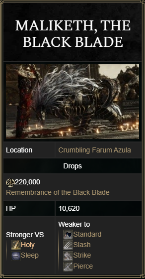

MALIKETH, THE BLACK BLADE

Maliketh, The Black Blade is a two-phase Legend Boss in Elden Ring. Gurranq, Beast Clergyman is found at the end of Crumbling Farum Azula and is revealed to be Maliketh, the Black Blade. Similar to how Blaidd is to Ranni, Maliketh is Queen Marika's shadow-bound beast. He was tasked to guard the Rune of Death, but his failure to do so led to the Night of the Black Knives. In order for this to never happen again, he imbued the rune into his very flesh.
This is not an optional boss, as players must defeat it to advance to Leyndell, Ashen Capital and finish the game.
" O, Death. Become my blade, once more. "
 MALIKETH, THE BLACK BLADE COMBAT INFORMATION
MALIKETH, THE BLACK BLADE COMBAT INFORMATION
- • Health: 10,620 HP
- • Defense: 120
- • Stance: 80
- • Parryable: Yes
- • Is vulnerable to a critical hit after being stance broken
- • Damage: Standard, Slash, Pierce, Holy
- • Drops 220,000 Runes, Remembrance of the Black Blade

MALIKETH, THE BLACK BLADE NOTES AND OTHER TRIVIA
- • Defeating Maliketh will automatically cause world-altering changes to the game environment including:
- ∘ The transformation of Leyndell into an ashen version. Several areas of Leyndell will become permanently inaccessible.
- ∘ Visible burning glowing red ember particles will cover the entire game world, and the Erdtree will become red with flame instead of the usual yellow.
- • Voice Actor: Jonathan Keeble
- • Was originally called the Beast Pastor in the 1.00 version of the game.
- • Maliketh was the half-brother and sworn Shadow of Queen Marika, to whom she entrusted the Rune of Death. Ranni the Witch stole a fragment of the Rune of Death to forge the daggers used during the Night of the Black Knives, causing a series of events that resulted in the Shattering. After which, she gave the Blasphemous Claw to her brother Rykard, to give him the power to challenge Maliketh.
- • In order to ensure that the Rune of Death was never stolen (again), Maliketh bound the blade that contained it to his own flesh.
- • Bug: If Tarnished dies during the second phase with the "debuff" on, they will not spawn with max HP. This applies to cooperators as well.